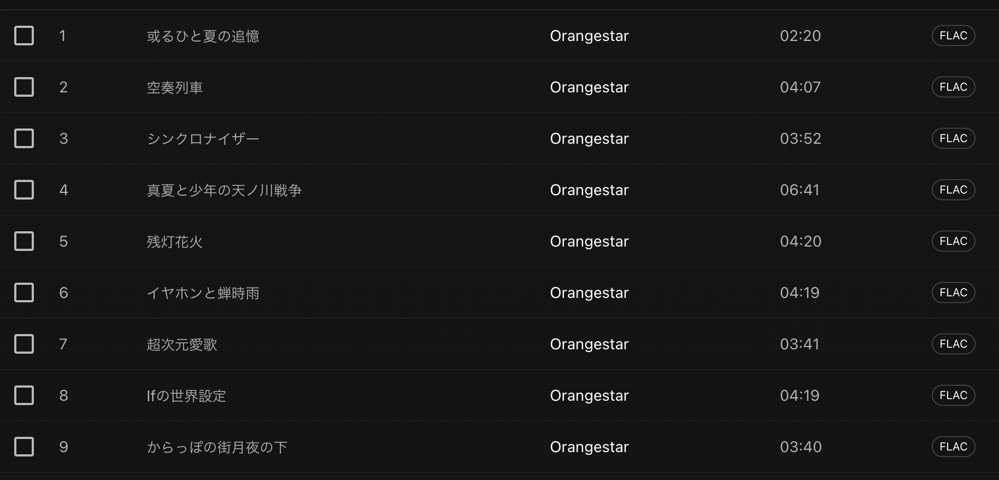
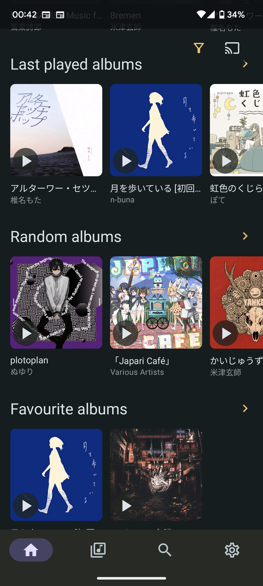
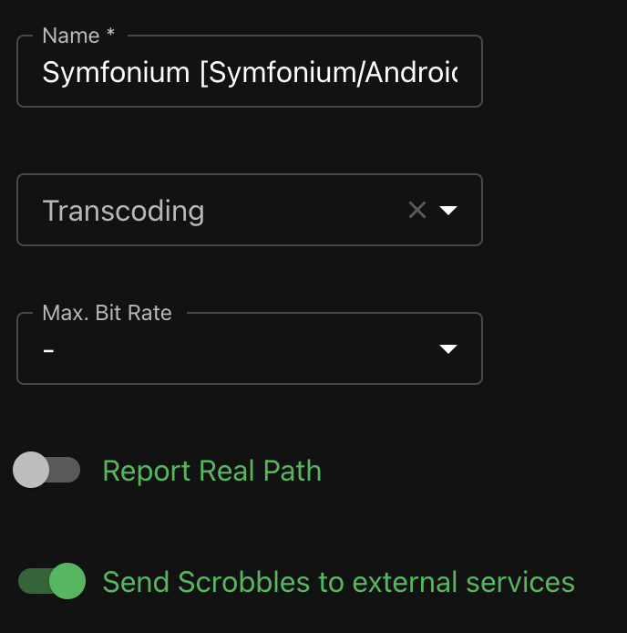
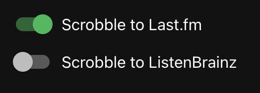

🎉 セルフホスト音楽ストリーミングサービス🎉 （みたいなことができるだけで実際はsubsonic互換の音楽サーバー）
https://github.com/navidrome/navidrome
既存の音楽ストリーミングサービスに付随する音楽ロッカー機能が使いにくい
Dockerイメージがあるのでシュッとね（docker使い方講座ではないので）
# compose.yml
navidrome:
image: deluan/navidrome:latest
user: 1000:1000 # 音源のオーナー
ports:
- "4533:4533"
restart: unless-stopped
environment:
# 適当に
ND_SCANSCHEDULE: 1h
ND_LOGLEVEL: info
ND_SESSIONTIMEOUT: 24h
ND_BASEURL: ""
volumes:
- "./data:/data" # キャッシュなどが入る
- "./path/to/music/library:/music:ro" # 音源ディレクトリをマウント$ docker compose up -d！（docker compose v2 使おう！）
ブラウザに http://localhost:4533 とか打つと入れる．
数分でスキャンが完了してアートワークが並び始める．
Spotify風のテーマがある(下図)
FLACで取り込まれた音源はストリーミング再生するときにもFLACのまま降ってきている（うれしいね）

再生するクライアントごとにエンコード先コーデックやビットレートを選択することができる（クライアントはAndroidだとSymfoniumってアプリが活発でいいですよ）
 
last.fm へ scrobble できる！（なんかしらんサービスにも）

rclone mount などを用いて無制限ドライブへのマッピング（容量が嵩むと困る場合に）時代は文化！音楽を楽しもう